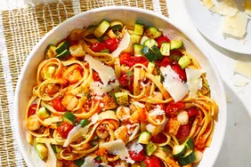

Farmer's Market Pasta

Learn how to make a delicious Farmer's Market Pasta that will make you fall in love with this dish!
- 1 pound pasta
- 1/4 cup olive oil
- 1/2 cup chopped onion
- 1/2 cup chopped red bell pepper
- 1/2 cup chopped yellow bell pepper
- 1/2 cup chopped zucchini
- 1/2 cup chopped yellow squash
- 1/4 cup chopped green onion
- 2 cloves garlic, minced
- 1 cup chicken broth
- 1/4 cup white wine
- 1 tablespoon lemon juice
- 1/2 cup heavy cream
- 1/4 cup chopped fresh basil
- 1/4 cup grated Parmesan cheese
Steps
- Bring a large pot of lightly salted water to a boil. Add pasta and cook for 8 to 10 minutes or until al dente; drain.
- Heat oil in a large skillet over medium-high heat. Add onion, red bell pepper, and yellow bell pepper. Saute for 4 minutes, then add zucchini, yellow squash, green onion, and garlic. Saute for 3 minutes.
- Pour in chicken broth, white wine, and lemon juice; cook for 5 minutes over high heat. Reduce heat to medium, and add the heavy cream. Cook, stirring, for 3 minutes.
- Toss with cooked pasta until evenly coated.
- Garnish with fresh basil and Parmesan cheese.
Back to Home